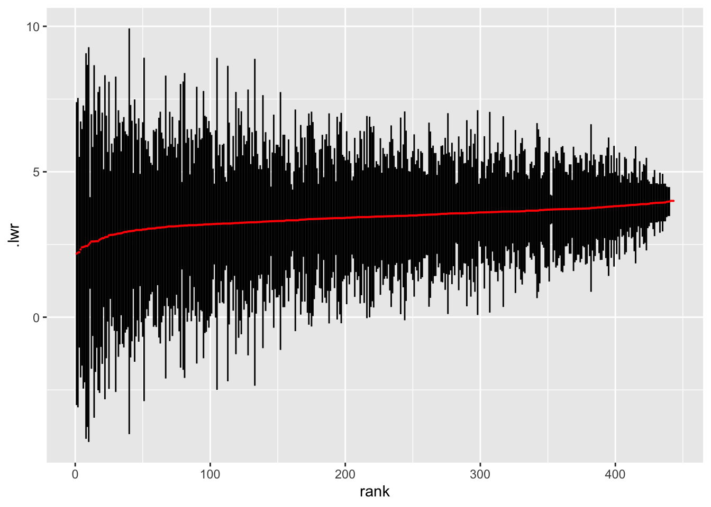
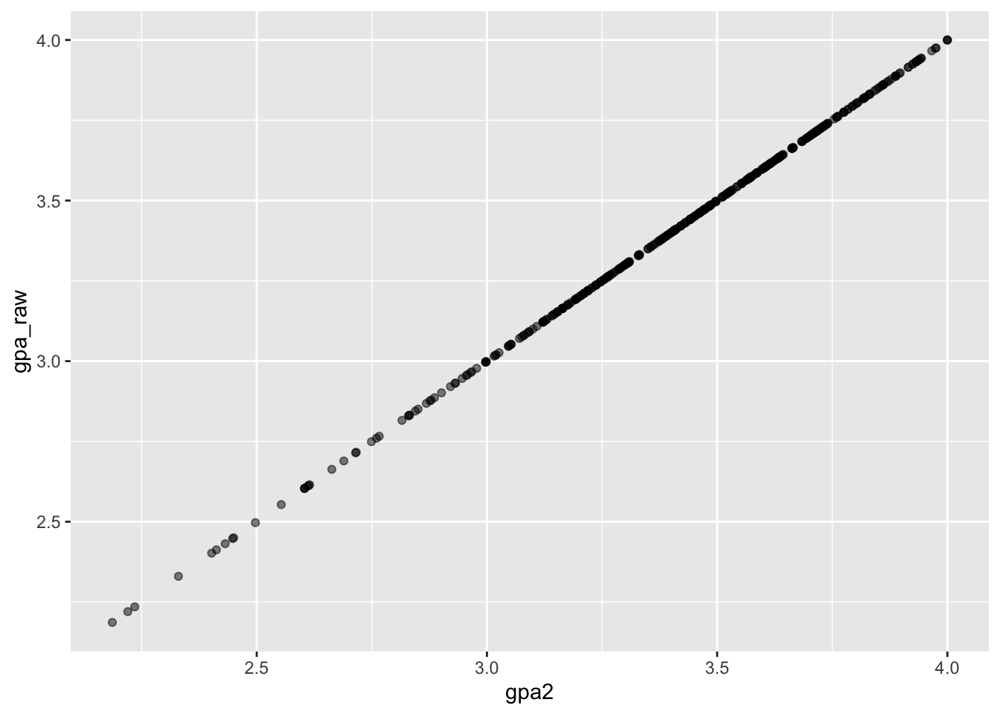
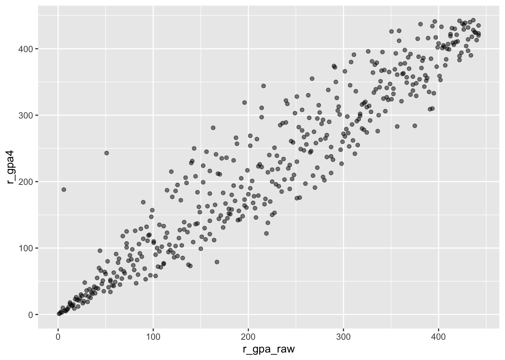
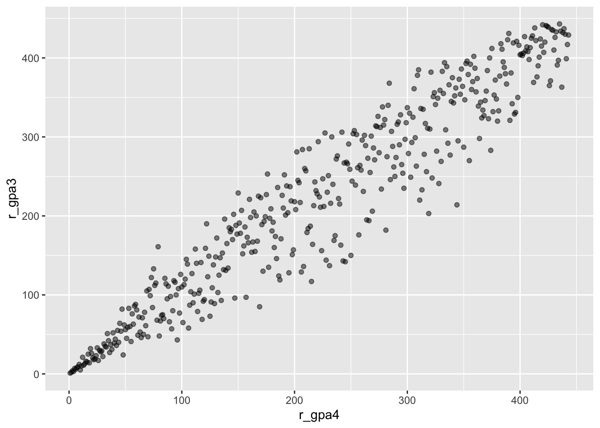
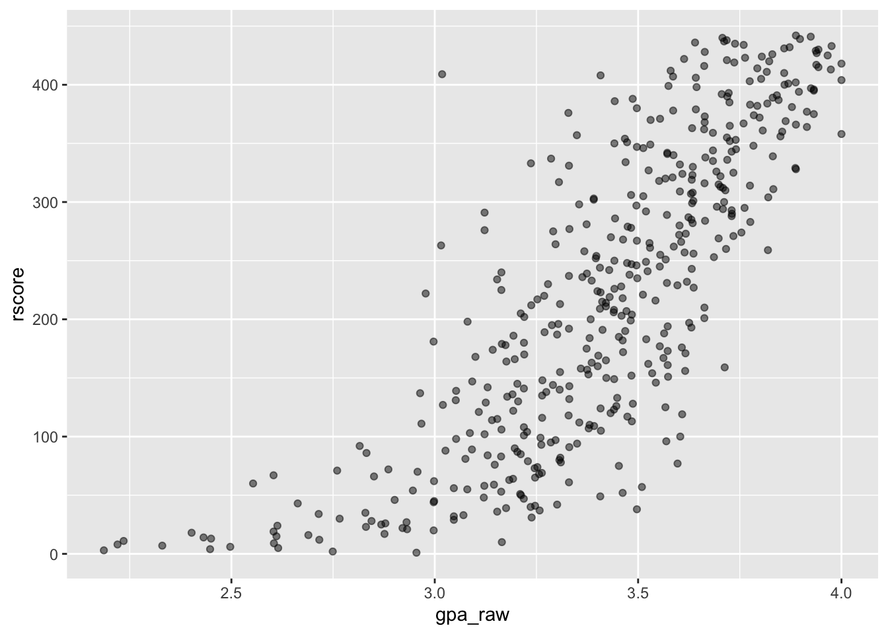
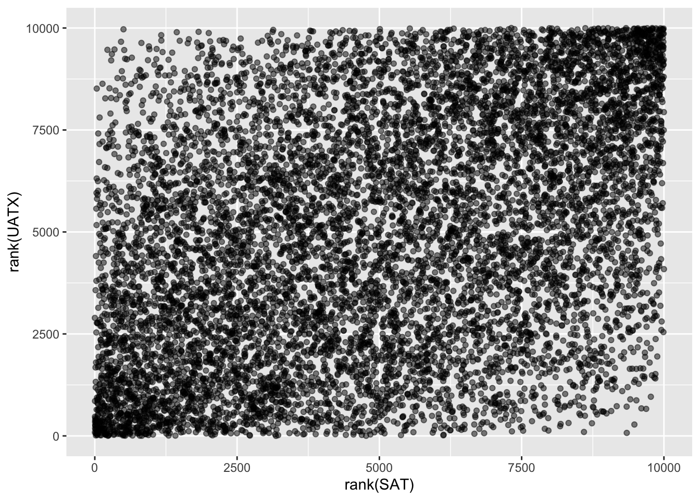
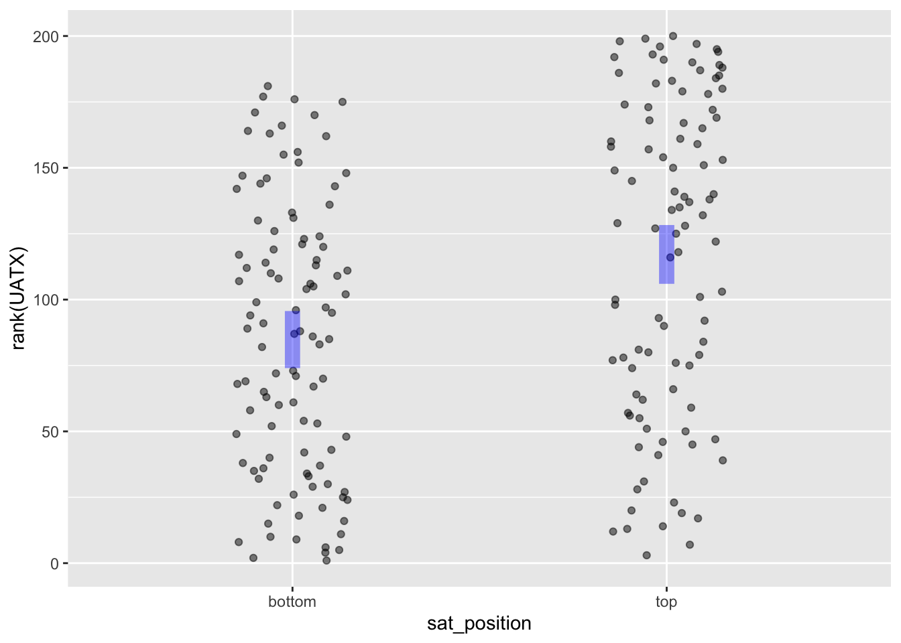

Events <- LSTbook::Grades |>
left_join(LSTbook::Sessions) |>
left_join(LSTbook::Gradepoint)Ranking by grade
linear algebra
Background software
The task of this modeling project is to construct a ranking of students based on their grades over a college career.
The data come from a small college in the US Midwest. For reasons of anonymity, student names have been replace with unique meaningless ID codes, with all the courses taken by a student and the grades received identified by that student’s code. Similarly, the instructor and department indentities are encoded. Also, only about half of the courses taken by each student are included. The students listed graduated in AY 2004/2005.
The data were originally in the form of three data frames in a relational database. We use data wrangling to merge them into a single data Events frame where the unit of observation is an event consisting of a single student receiving a grade in a single course.
To orient you to the variables and their meanings, here are five randomly selected events:
Events |> take_sample(n = 5) grade sessionID sid iid enroll dept level sem gradepoint
1 C+ session3354 S32034 inst155 11 M 300 SP2004 2.33
2 A session3478 S31722 inst354 23 W 300 FA2004 4.00
3 B+ session2135 S31950 inst219 26 J 100 FA2001 3.33
4 A- session2007 S32472 inst415 30 d 100 SP2002 3.66
5 A- session3046 S31536 inst375 10 X 300 FA2003 3.66The gradepoint variable is the numerical equivalent of the letter grade.
One oddity of the data is that, for a few students, courses were taken some years before the rest of the cohort. Let’s wrangle up the distribution of semesters:
Semesters <- Events |>
mutate(sem = gsub("S(1|2)", "SP", sem)) |>
summarize(takers = n(), .by = sem) |>
arrange(desc(takers)) |>
mutate(keep = ifelse(takers > 400, "keep", "rid"))
Semesters sem takers keep
1 FA2002 890 keep
2 FA2003 867 keep
3 FA2001 826 keep
4 SP2002 803 keep
5 SP2003 775 keep
6 FA2004 754 keep
7 SP2005 629 keep
8 SP2004 497 keep
9 SP2001 31 rid
10 FA2000 27 rid
11 SP2000 7 rid
12 FA1999 6 rid
13 FA1993 3 rid
14 FA1991 2 rid
15 SP1997 2 rid
16 SP1998 2 rid
17 FA1997 1 rid
18 IT1994 1 rid
19 SP1994 1 rid
For Statistical Modeling students
Join Semesters with Events. Use it to remove students who took any course outside of the most populated 8 semesters.
Events |>
left_join(Semesters |> select(sem, keep)) |>
filter(keep == "keep") -> GooJoining with `by = join_by(sem)`But really I want to remove students, not just the courses they took in off semesters.
Events |>
left_join(Semesters |> select(sem, keep)) |>
filter(all(keep == "keep"), .by = sid) -> Goo2Joining with `by = join_by(sem)`Ranking with GPA
Most students are familiar with the GPA and its use in ranking students. Here’s the calculation written in the {dplyr} notation.
GPA <- Events |>
summarize(gpa_raw = mean(gradepoint, na.rm = TRUE), .by = sid)
GPA |> take_sample(n = 5) sid gpa_raw
1 S31200 2.186429
2 S31263 3.469167
3 S31278 3.308667
4 S31857 2.844545
5 S31488 3.482727To be statistically literate, such an estimate of the GPA should come with a confidence interval. We’ll calculate the margin of error using stardard textbook formulas. In calculating the margin of error, I’ll artificially double the \(n\) for each student so that we get the magnitude of standard errors we would expect to see if we had all the student-grade records.
GPA <- Events |>
summarize(gpa_raw = mean(gradepoint, na.rm = TRUE),
gp_var = var(gradepoint, na.rm = TRUE),
gp_me = 2 * sqrt(gp_var / 2 * n()),
.lwr = gpa_raw - gp_me,
.upr = gpa_raw + gp_me,
.by = sid) |>
select(sid, .lwr, gpa_raw, .upr)
GPA |> take_sample(n=5) sid .lwr gpa_raw .upr
1 S32229 1.5320844 3.487059 5.442033
2 S31245 4.0000000 4.000000 4.000000
3 S31530 2.0420149 3.804167 5.566318
4 S31716 3.0286123 3.830000 4.631388
5 S31719 -0.9174833 2.901429 6.720340GPA |>
arrange(gpa_raw) |>
mutate(rank = 1:n()) |>
gf_segment(.lwr + .upr ~ rank + rank) |>
gf_point(gpa_raw ~ rank, color = "red", size=0.1)
We can do much the same calculation by modeling, but we’ll have to “adjust” the confidence intervals by hand to mimic data with the full collection of grades.
GPA2 <- Events |>
model_train(gradepoint ~ sid) |>
model_eval(data = tibble(sid = unique(Events$sid)), interval = "confidence") |>
mutate(.lwr = .output - (.output - .lwr)/sqrt(2), .upr = .output + (.upr - .output)/sqrt(2))
set.seed(101)
GPA2 |>
take_sample(n=5)# A tibble: 5 × 4
sid .lwr .output .upr
<chr> <dbl> <dbl> <dbl>
1 S31932 2.67 2.87 3.06
2 S31473 3.24 3.48 3.71
3 S32019 2.47 2.66 2.86
4 S31584 3.21 3.41 3.60
5 S32253 3.71 3.89 4.07Compare GPA with GPA2:
Compare <- GPA |>
select(sid, gpa_raw) |>
mutate(gpa2 = GPA2$.output)
Compare |> point_plot(gpa_raw ~ gpa2)
Why don’t they …?
Let’s speculate on why registrars don’t report a GPA with a confidence interval.
What about the covariates
TASK: Add in some covariates: semester, class level, class size
GPA3 <- Events |>
model_train(gradepoint ~ sid + enroll + level + sem) |>
model_eval(data = tibble(sid = unique(Events$sid),
sem="SP2005", level=300, enroll=12),
interval = "confidence") |>
mutate(.lwr = .output - (.output - .lwr)/sqrt(2),
.upr = .output + (.upr - .output)/sqrt(2))
set.seed(101)
GPA3 |>
take_sample(n=5) |>
select(sid, .lwr, .output, .upr)# A tibble: 5 × 4
sid .lwr .output .upr
<chr> <dbl> <dbl> <dbl>
1 S31932 2.80 2.99 3.19
2 S31473 3.39 3.63 3.86
3 S32019 2.61 2.81 3.00
4 S31584 3.37 3.56 3.76
5 S32253 3.85 4.03 4.21Compare <- Compare |>
mutate(gpa3 = GPA3$.output)Let’s look at the extent to which dept or instructor plays a role:
Events |>
model_train(gradepoint ~ enroll + level + sem + dept + iid + sid) |>
anova_summary()# A tibble: 7 × 6
term df sumsq meansq statistic p.value
<chr> <int> <dbl> <dbl> <dbl> <dbl>
1 enroll 1 8.42 8.42 40.3 2.33e- 10
2 level 1 6.72 6.72 32.2 1.49e- 8
3 sem 24 53.2 2.21 10.6 3.02e- 39
4 dept 38 115. 3.04 14.5 4.74e- 87
5 iid 345 231. 0.671 3.21 9.52e- 70
6 sid 442 586. 1.33 6.35 1.33e-249
7 Residuals 4838 1010. 0.209 NA NA And find the “instructor-adjusted” GPA:
GPA4 <- Events |>
model_train(gradepoint ~ sid + enroll + level + sem + dept) |>
model_eval(data = tibble(sid = unique(Events$sid),
sem="SP2005", level=300, enroll=12,
iid = "inst436", dept = "q"),
interval = "confidence") |>
mutate(.lwr = .output - (.output - .lwr)/sqrt(2),
.upr = .output + (.upr - .output)/sqrt(2))Compare <- Compare |>
mutate(gpa4 = GPA4$.output) |>
mutate(r_gpa_raw = rank(gpa_raw),
r_gpa3 = rank(gpa3),
r_gpa4 = rank(gpa4))How do the adjusted models agree with the “raw” gpa
Compare |>
point_plot(r_gpa3 ~ r_gpa_raw)Compare |>
point_plot(r_gpa4 ~ r_gpa_raw)
How well do the two “adjusted” models agree?
Compare |>
point_plot(r_gpa3 ~ r_gpa4)
A political problem
The registrar would never perform such a regression. The political heat from the faculty would be too great.
Can we construct a ranking that uses only sid, session, and gradepoint? That will let us avoid
How many students did each instructor teach?
nstudents <- Events |>
summarize(count = n(), .by = iid) |>
arrange(desc(count))Let’s look only at instructors with more than 10 students.
Keepers <-
nstudents |>
filter(count > 10) |>
left_join(Events)Joining with `by = join_by(iid)`Method
https://maherou.github.io/Teaching/files/CS317/masseyMethod.pdf
Trying again
Compare all pairs of students in a session.
for_one_session <- function(this_session) {
Roster <- Events |>
filter(sessionID == this_session) |>
select(sid, gradepoint)
P1 <- expand.grid(Roster$sid, Roster$sid)
P2 <- expand.grid(Roster$gradepoint, Roster$gradepoint)
names(P1) <- c("sid", "sid2")
names(P2) <- c("gp1", "gp2")
dplyr::bind_cols(P1, P2) |>
mutate(gp3 = gp1 - gp2) |>
filter(gp3 > 0)
}
Sessions <- Events |>
select(sessionID, enroll) |>
filter(enroll > 10) |>
filter(row_number() == 1, .by = sessionID)
Snames <- as.list(Sessions$sessionID)Rosters <- lapply(Snames,
FUN = function(x) for_one_session(x)) |>
dplyr::bind_rows() |>
mutate(sid = as.character(sid), sid2 = as.character(sid2)) |>
mutate(competition = row_number())
student_index2 <- student_index <-
tibble::tibble(
sid = unique(c(Rosters$sid, Rosters$sid2))) |>
mutate(sindex = row_number())
names(student_index2) <- c("sid2", "sindex2")
Rosters <- Rosters |>
left_join(student_index) |>
left_join(student_index2)Joining with `by = join_by(sid)`
Joining with `by = join_by(sid2)`Fill in the matrix for each competition
compete_M <- matrix(0, ncol = nrow(student_index), nrow = nrow(Rosters))
RC <- cbind(Rosters$competition, Rosters$sindex)
compete_M[RC] <- 1
RC2 <- cbind(Rosters$competition, Rosters$sindex2)
compete_M[RC2] <- -1
compete_M[nrow(compete_M), ] <- 1
# how many redundant vectors
table(svd(compete_M)$d > 0.01)
TRUE
442 foo <- qr.solve(compete_M[,1:442], Rosters$gp3)
Rankings <- tibble::tibble(score = foo) |>
bind_cols(student_index) |>
mutate(rscore = rank(score)) |>
arrange(desc(rscore)) |>
left_join(GPA) |>
select(sid, rscore, gpa_raw)Joining with `by = join_by(sid)`Rankings |> point_plot(rscore ~ gpa_raw)
Look at special cases, such as S31254 who had a perfect GPA but low rank in the class. Is this because s/he won competitions narrowly with students with a low rank.
RR <- Rosters |>
left_join(Rankings) |>
left_join(Rankings, by = join_by(sid2 == sid))Joining with `by = join_by(sid)`RR |> filter(sid == "S31254") -> hooOr look at the two people with high rank but GPA near 3.0.
Compare the departments in which people of low rank took courses compared to high rank.
Bottom <- Rankings |> filter(rscore < 100)
Low <- Events |>
filter(sid %in% Bottom$sid) |>
summarize(bottom_count = n(), .by = dept)
Top <- Rankings |> filter(rscore > 375)
High <- Events |>
filter(sid %in% Top$sid) |>
summarize(top_count = n(), .by = dept)
Together <- Low |> full_join(High)Joining with `by = join_by(dept)`Look at Together to see whether students have the same distribution of departments.
SAT scores and academic performance
The College Board claims that the predictive power of the SAT on (first-year) college performance corresponds to \(r \approx 0.40\).
To visualize what this means, let’s construct 10,000 pairs of SAT versus UATX performance that have this correlation and look at the rank of each student by both measures.
n = 10000
Simulation <- tibble(
common = 0.4 * rnorm(n),
UATX = common + 0.47 * rnorm(n),
SAT = common + 0.47 * rnorm(n)
)
Simulation |>
model_train(UATX ~ SAT) |>
R2() n k Rsquared F adjR2 p df.num df.denom
1 10000 1 0.175413 2126.858 0.1753306 0 1 9998Simulation |> point_plot(rank(UATX) ~ rank(SAT))
Perhaps a better intuition can be had by imagining 200 applicants and looking at the performace of those in the top half of the SAT versus those in the bottom half.
Simulation |>
mutate(sat_position = ifelse(rank(SAT) > n/2, "top", "bottom")) |>
take_sample(n = 200) |>
point_plot(rank(UATX) ~ sat_position, annot = "model",
point_ink = 0.5)